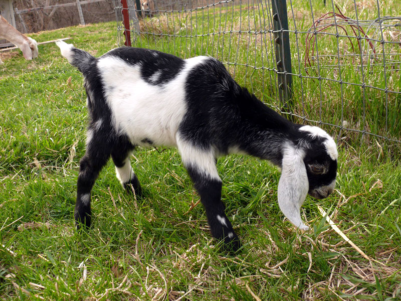

Our Cheese

Simply Pure Chevre
Light, mild cheese, sparsely salted with cream cheese consistency.
Basil Garlic
Fresh, organic basil and roasted garlic chopped and mixed throughout. These stronger herbs contrast nicely with the mild chevre base.
Dill
Mild flavoring of fresh, organic dill allows full taste of the cheese to be enjoyed.
Cranberry Horseradish
Mixture of sweet cranberry compliments fresh horseradish. Can be paired nicely with wines.
Smoke Flavored
Lightly smoked to allow the sweet chevre taste to come through while providing a smoke flavor accent.
Smokey Aleppo Pepper
Mildly hot Turkish pepper with underlying smokey flavoring. Offers a kick about 5 seconds after tasting.
Lemon Verbena and Honey
Chopped organic herb provides refreshing taste when combined with local honey accent. Often used in salads, with fish or as a desert.